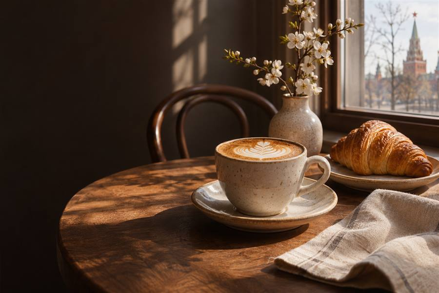

Открыть демо-сайтMORNING RITUAL — кофейня
Сайт кофейни с меню, фильтрами, корзиной и интерактивным демо-заказом.
Разбор проекта
Задача
Показать кофейню как понятное место для быстрого заказа и спокойной паузы.
Решение
Фильтруемое меню, корзина, сумма заказа и пошаговое демо-оформление.
Адаптив
Сетка и навигация перестраиваются для узкого экрана; демо можно открыть по ссылке выше.
Реализация
В проекте использованы HTML, CSS и JavaScript. Заказ обрабатывается только в браузере.
Самостоятельный проект · заявка не отправляется в кафе или CRM.